<!DOCTYPE html>
<html lang="en">
  <head>
    <meta charset="utf-8" />
    <meta name="viewport" content="width=device-width, initial-scale=1.0, maximum-scale=1.0, user-scalable=no" />

    <title>reveal-md deployed to gh-pages</title>
    <link rel="shortcut icon" href="./favicon.ico"/>
    <link rel="stylesheet" href="./dist/reveal.css" />
    <link rel="stylesheet" href="./dist/theme/black.css" id="theme" />
    <link rel="stylesheet" href="./css/highlight/zenburn.css" />
    <link rel="stylesheet" href="./_assets/custom.css" />

  </head>
  <body>
    <div class="reveal">
      <div class="slides"><section  data-markdown><script type="text/template">
# A distinct CRC module drives oncogenes in KMT2A-r leukemia
            
Jérémie Kalfon - CDS meeting - 02/02

</script></section><section ><section data-markdown><script type="text/template">
## Recap üìñ
</script></section><section data-markdown><script type="text/template">### enhancer and TFs


  ‚û° enhancers drive expression <!-- .element: class="fragment" data-fragment-index="1" -->
</script></section><section data-markdown><script type="text/template">### super enhancers & TADs.

<div class="r-stack">
  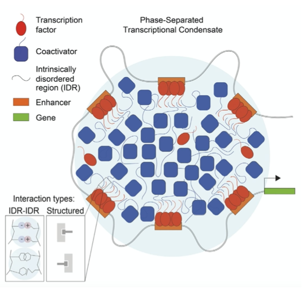
  
</div>
</script></section><section data-markdown><script type="text/template">### Core Regulatory Circuitry & cell state.


</script></section><section data-markdown><script type="text/template">

</script></section></section><section ><section data-markdown><script type="text/template">
## What is the link with AML and dependencies 🤔.
</script></section><section data-markdown><script type="text/template">### Many effective drugs in AML and Cancer target TFs.

- [BET protein inhibitor JQ1 downregulates chromatin accessibility and suppresses metastasis of gastric cancer via inactivating RUNX2/NID1 signaling](https://www.nature.com/articles/s41389-020-0218-z)
- [Mission Possible: Advances in MYC Therapeutic Targeting in Cancer](https://link.springer.com/article/10.1007/s40259-019-00370-5) <!-- .element: class="fragment" data-fragment-index="1" -->
</script></section><section data-markdown><script type="text/template">

1. There is the famous theory of **cancer** as being in a **stem cell state** & reusing these stem cell states (immortality, fast division, proliferation) to become cancerous.
2. We know that we can create and revert stem cell states (Yamanaka Factors) by changing the epigenetics of cells. <!-- .element: class="fragment" data-fragment-index="1" -->

</script></section></section><section ><section data-markdown><script type="text/template">
### What we have:
</script></section><section data-markdown><script type="text/template">###  A set of CRCs:


CRCmapper: from gene expression + TF motifs + super enhancer bedfile + gene location, will compute the CRC.
</script></section><section data-markdown><script type="text/template">> Usually this is done with CRCmapper but the tool is not giving all CRC members based on their definition of CRC and what we know about that cell line.
</script></section><section data-markdown><script type="text/template"><!-- .slide: data-background-color="rgb(255, 255, 255)"> -->

 <!-- .img: class="r-stretch" data-fragment-index="0" -->
</script></section><section data-markdown><script type="text/template"><!-- .slide: data-background-color="rgb(255, 255, 255)"> -->

 
</script></section><section data-markdown><script type="text/template">- H3K27ac chipseq of a 140 PDXs
- \~250 chipseq on MV411
- many replicates,
- good/bad qualities,
- different seq methods, different labs (anything I could find on SRA)
</script></section><section data-markdown><script type="text/template"><!-- .slide: data-background-color="rgb(255, 255, 255)"> -->

<iframe allowfullscreen data-src="https://docs.google.com/spreadsheets/d/1yFLjYB1McU530JnLgL0QIMAKIkVl3kl0_LCHje2gk8U#gid=738732237" style="width:100%; height:545px"></iframe>
</script></section><section data-markdown><script type="text/template">### What I am using üë∑:
</script></section><section data-markdown><script type="text/template">
</script></section><section data-markdown><script type="text/template">- Nextflow + GCP + NFcore ( + good file management üòÖ )
- Bedtools + DeepTools + A package I built  with many epigenetic plot/helper functions <!-- .element: class="fragment" data-fragment-index="1" -->

</script></section></section><section ><section data-markdown><script type="text/template">
### First step:
</script></section><section data-markdown><script type="text/template"><iframe data-src="images/Chip_res_multiqc_multiqc_report_pe.html" style="width:100%; height:545px"></iframe>
</script></section><section data-markdown><script type="text/template">  - Frip score, read counts
  - Look at igv signal and found peaks üîç
</script></section><section data-markdown><script type="text/template">### Second step:

##### A tool for merging chipseq replicate peakfiles.
 
  - Computes which one is the best
    - from user defined annotations of quality
    - from overlap within replicates
  - Computes which ones are too bad to even be used
  - Plots important metrics: venn overlap, correlation.
</script></section><section data-markdown><script type="text/template"><!---  -->
<!-- .slide: data-background-color="rgb(255, 255, 255)"> -->

<iframe allowfullscreen src="https://igv.org/web/release/2.7.4/embed.html?sessionURL=blob:tVTBbts6EPyVgKcWkEjJki3Lx5dDUjQFCgNtDkURUNKKYiORKknZcQz_e5ayA7.D6wRNahg.7Ix3hkPubskKjJVakQWZ0IymJCAGajCgSiCLLZEVIo1I5ggo3mGNXA8dVxcfrpaXTTJnHvuIYM2t49.WN57uXG8XjNmEVgNvsV7e08GGgJQwprzjj1rxtaWl7pgUK1oYzSuprJNucEC1EUyA0h1YZuH3KDH.0JqjklQVPPx7JfxKVCs3ThdcVX8piAr0WWHszpXSjjuM3DLf.z_s_akCTd2Do.KR7ALS6nKwKFY2JlvMpkEWzYMkn4WzWRDNJ0GaTtGXMyiNrB9b4ja9vxc8wDBeW0C0qcCQRZhHURbn.WSaZmmU5_Eu2JLBtEgW_hS8a3ujf0Hp2GUje1bqAsOVSrBizVkHRkB1IwvDzYYVUqylYF2fReGX72kch9fJ50nGy7tlTBG8leL4RF5g1dp03CFv3_RoOH2DwY6Xlo33.xX4_Wmjdz1Cdv8KPOsFxyfoR.u.6PGj..w94o2T2WvyPU_7Y8Dz9wz4lIdzCb.Sfy7i3Ps_NFxCjU_.4goU2P__DfcXTpwfg_1B3z6zqiwkqnml5zE9rCHA9VhjTwjISlpZyFa6zS1Ceo3jF_tl2ukVL1o0fOAdThJH4ycgDUjRoG8s7H7ungA-" style="width:100%; height:545px"></iframe>
</script></section><section data-markdown><script type="text/template">

<!-- .slide: data-background-color="rgb(255, 255, 255)"> -->
</script></section><section data-markdown><script type="text/template">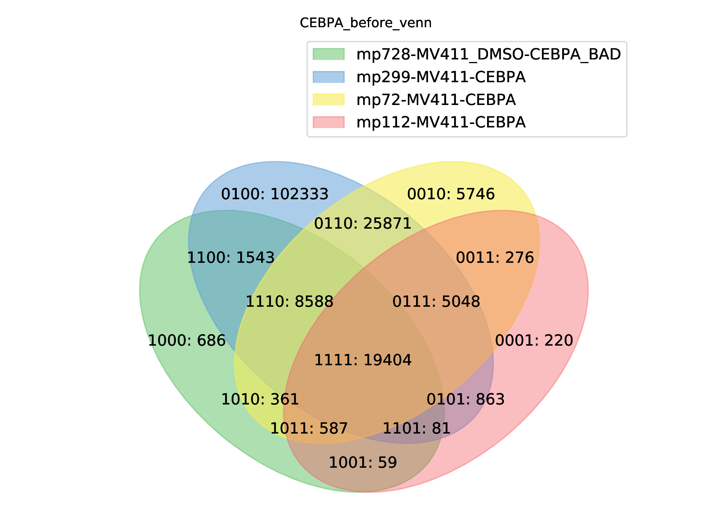 

Confirms peaks under region where some replicates have peaks but not other.
Using an algorithm similar to MACS2.
</script></section><section data-markdown><script type="text/template">We recover a peak if the distance between the poisson distribution of peak region and poisson from the full chromosome is above a certain cutoff.

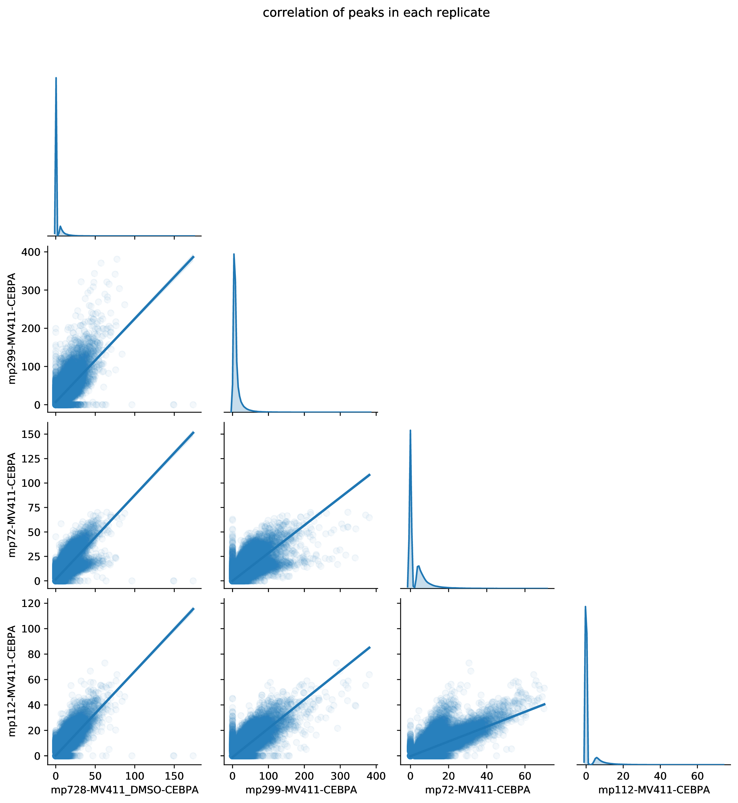

We get all peaks found in at least 2 replicates or the "main/best" replicate.

</script></section></section><section ><section data-markdown><script type="text/template">
## Making a cobinding matrix.

> Peaks are stored in to a bed file (similar to what our segment cn file is)

--> We are merging them together into a conscensus peak.

_<aside class="notes"><p>Changing the window size does not seem to drastically change the results._</p>
</aside></script></section><section data-markdown><script type="text/template"><!-- .slide: data-background-color="rgb(255, 255, 255)"> -->


</script></section><section data-markdown><script type="text/template">Now  we have a matrix of region bound by CRC TFs:
- How they co-bind, 
- with what intensity and
- what these regions are enriched for.
</script></section><section data-markdown><script type="text/template">### Making gene - Enhancer assignments.

<!--  -->
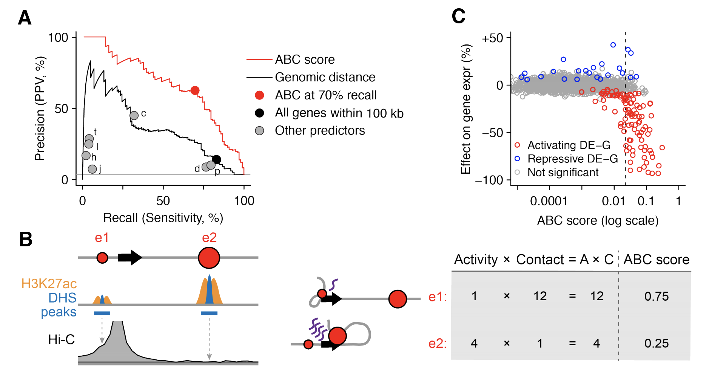

ABC model: computes gene<->enhancer mapping from gene expression, H3K27ac ChIP-seq & HiC-seq.

</script></section></section><section ><section data-markdown><script type="text/template">
## Adding more features.

Here I will present a couple of tools that I have used or I am planning to use to enrich the dataset with additional features.
</script></section><section data-markdown><script type="text/template">- ROSE
- ChromHMM
- MEME
</script></section><section data-markdown><script type="text/template">- ROSE: computes super enhancer by stitching nearby enhancers and computing which ones are above a certain threshold. (you might have seen this feature already in some plots).


</script></section><section data-markdown><script type="text/template"><!--  -->


</script></section><section data-markdown><script type="text/template">

- ChromHMM: computes from many chromatin marks, the chromatin state of the genome by learning to pred ict the marks across the genome. State might be more meaningful than a bunch chromatin mark signal?
</script></section><section data-markdown><script type="text/template">

- MEME: motif analysis package
  - QCs and confirms ChIPseq data from looking a the motifs under peaks and comparing with known motifs for that TF
  - adds motifs to the conscensus peaks in the cobinding matrix.
  - we used it on a personalized genome (from CCLE WGS)

</script></section></section><section ><section data-markdown><script type="text/template">
# Results
</script></section><section data-markdown><script type="text/template">## Super Enhancers define distinct AML clusters
</script></section><section data-markdown><script type="text/template">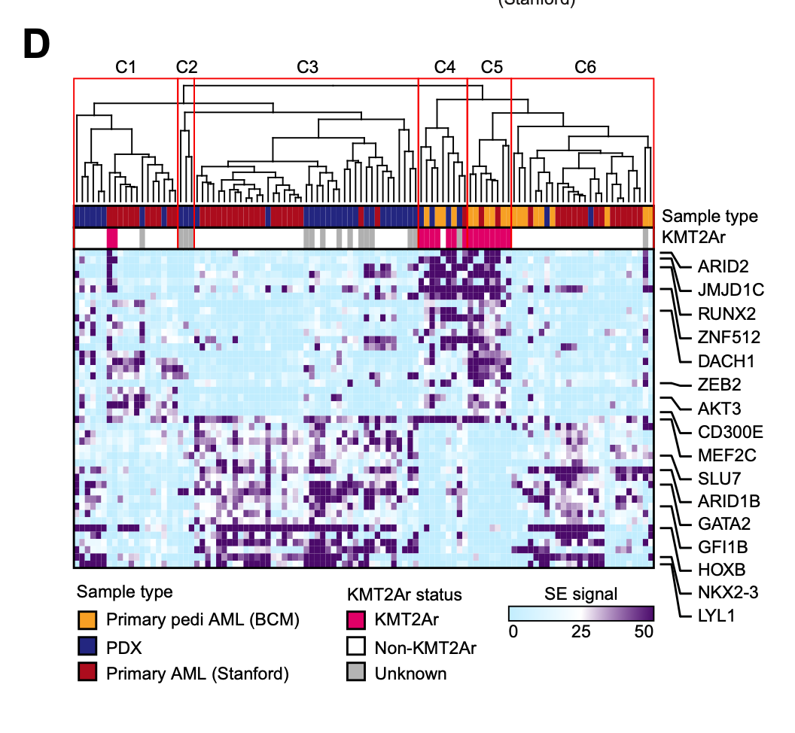

Suggesting unique differences in the transcriptional circuitry imparted by the KMT2A translocations.
</script></section><section data-markdown><script type="text/template">## Divergent CRCs mark context-specific transcriptional addictions
</script></section><section data-markdown><script type="text/template">KMT2Ar AML has some specificities in its CRC program. Which related to its dependency score.

<div class="r-stack" >
  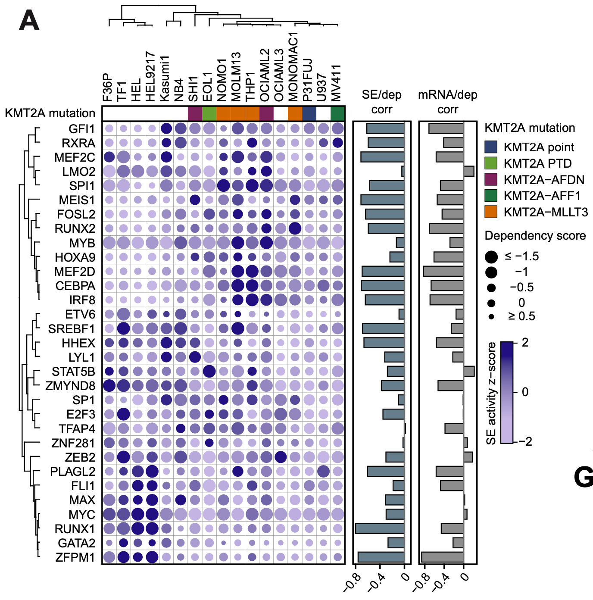
  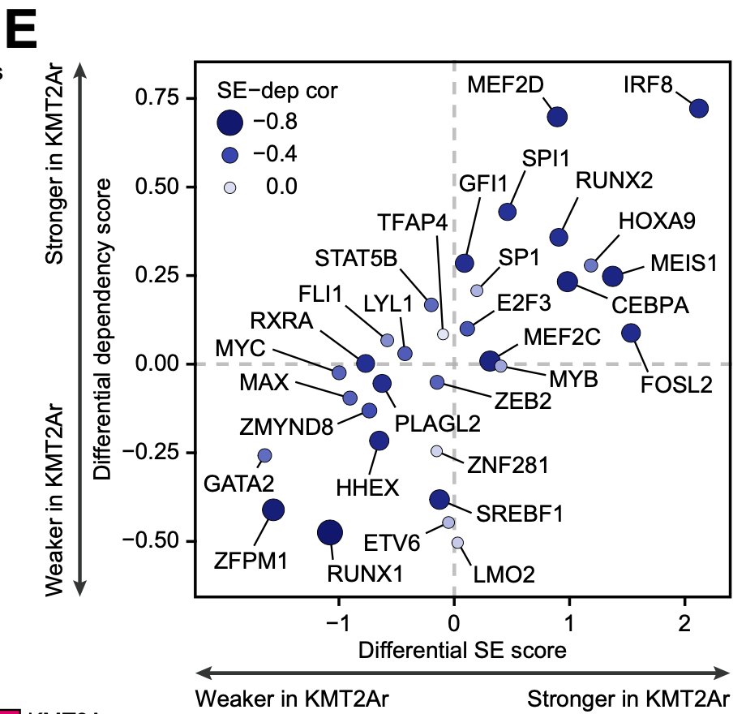 
</div>
</script></section><section data-markdown><script type="text/template">> We have really identified the reason and principle of CRC dependency in AML. __Which, What, How, Why.__
</script></section><section data-markdown><script type="text/template">## Synthetic lethality reveals redundancy of co-expressed TF paralogs 
</script></section><section data-markdown><script type="text/template">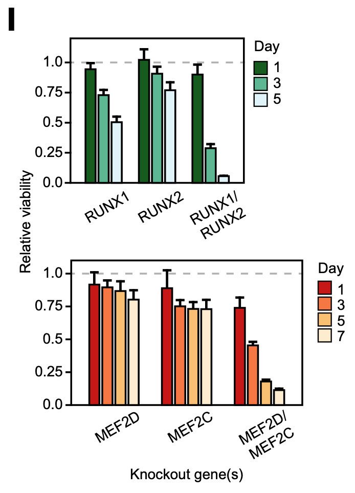

some paralog CRC members can rescue the cell and act as partially redundant elements.
</script></section><section data-markdown><script type="text/template">## CRC hierarchy revealed by patterns of genomic co-occupancy and knockout response
</script></section><section data-markdown><script type="text/template">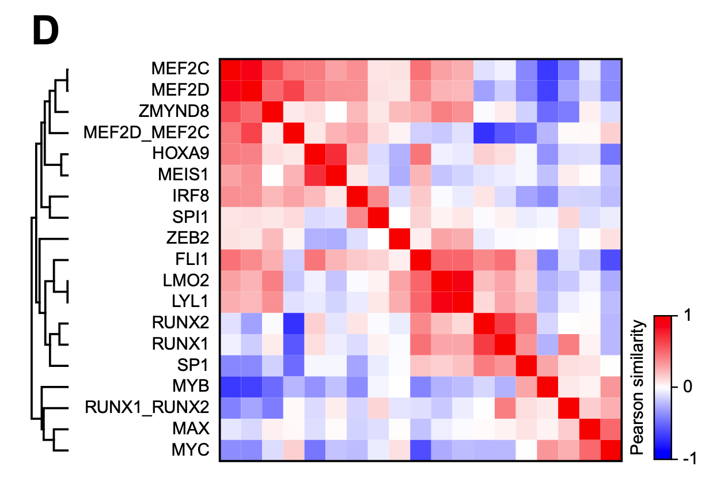

CRC is actually hierarchical, partially connected, with antagonistic regulation patterns.
</script></section><section data-markdown><script type="text/template"><iframe src="images/v3_motifs_150enrichment_correlation.html" style="width:100%; height:545px; self-align:center;" style=""></iframe>
</script></section><section data-markdown><script type="text/template">
</script></section><section data-markdown><script type="text/template">## super resolution microscropy as an orhtogonal confirmation
</script></section><section data-markdown><script type="text/template"><div class="r-stack">
  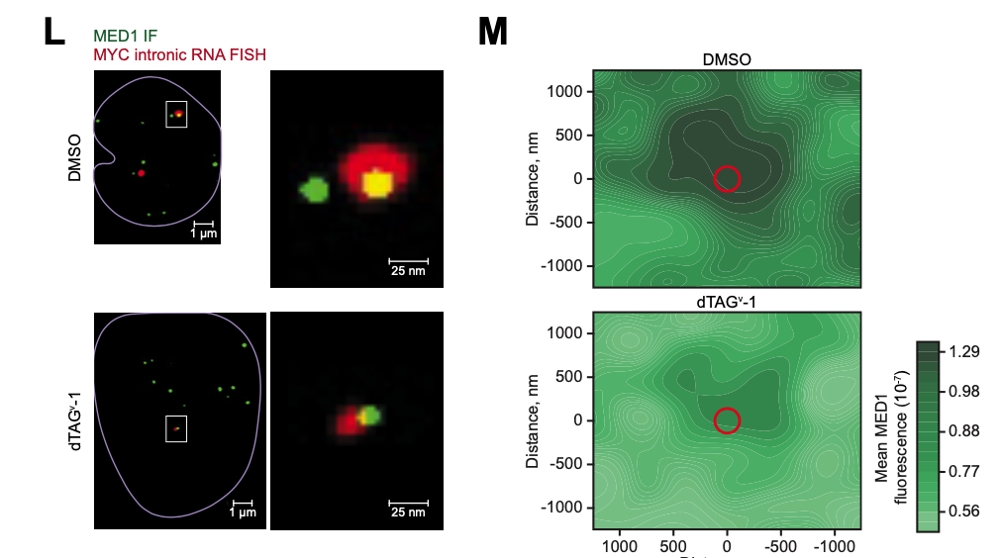
  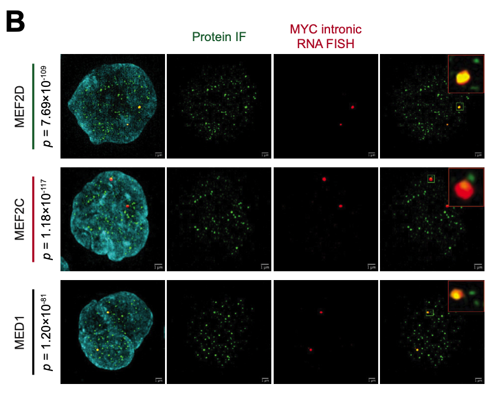
  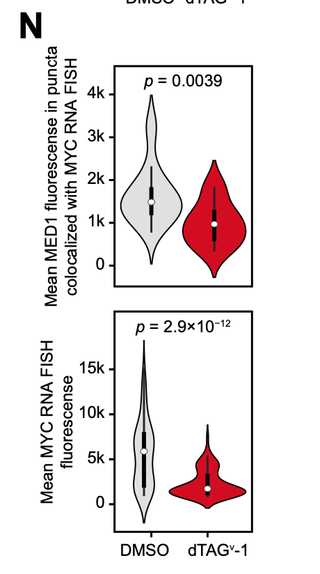
</div>

also with some quantitative analysis
</script></section><section data-markdown><script type="text/template">## The IRF8/MEF2 axis regulates key oncogenes in KMT2Ar AML

In depth review of the IRF8/MEF2 axis an how/what it regulates in KMT2Ar AML.
won't show too much detail. very experimental.
</script></section><section data-markdown><script type="text/template"><div class="r-stack">
  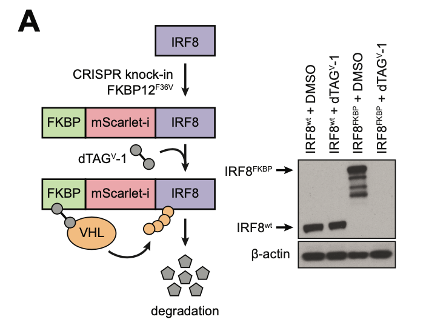
  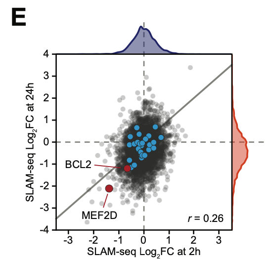
  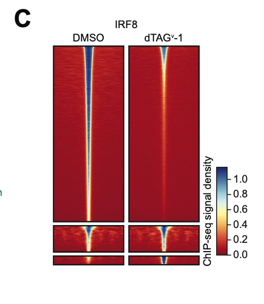
  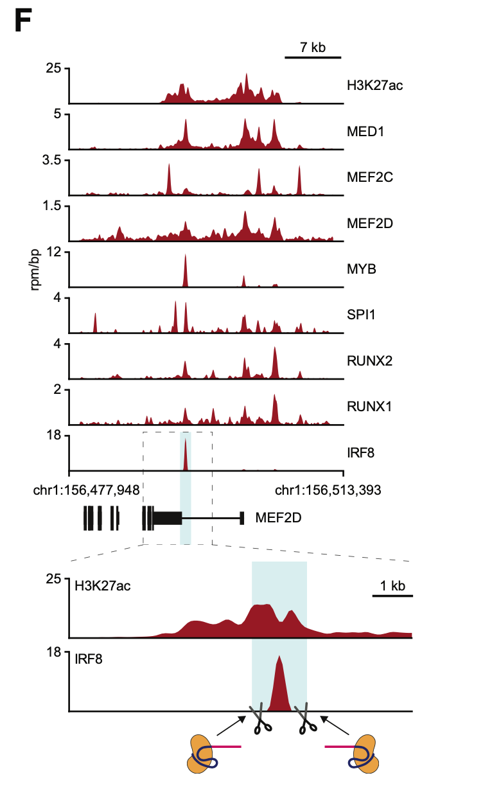
</div>
</script></section><section data-markdown><script type="text/template">## A ressource

Hubs of CRC. No SE signature. Hierarchical structure
</script></section><section data-markdown><script type="text/template">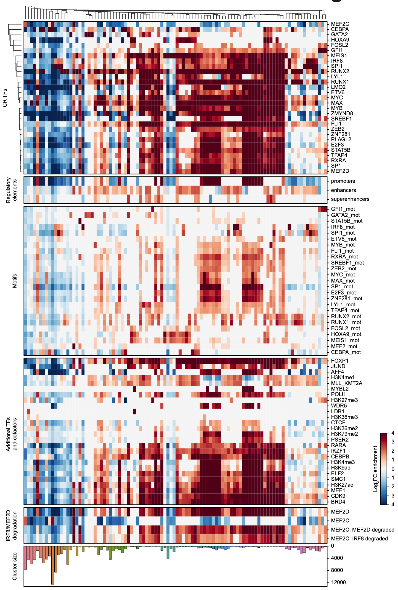

</script></section></section><section ><section data-markdown><script type="text/template">
## Questions:

1. Do we have unidirectional effects?
</script></section><section data-markdown><script type="text/template"><!-- 
 -->
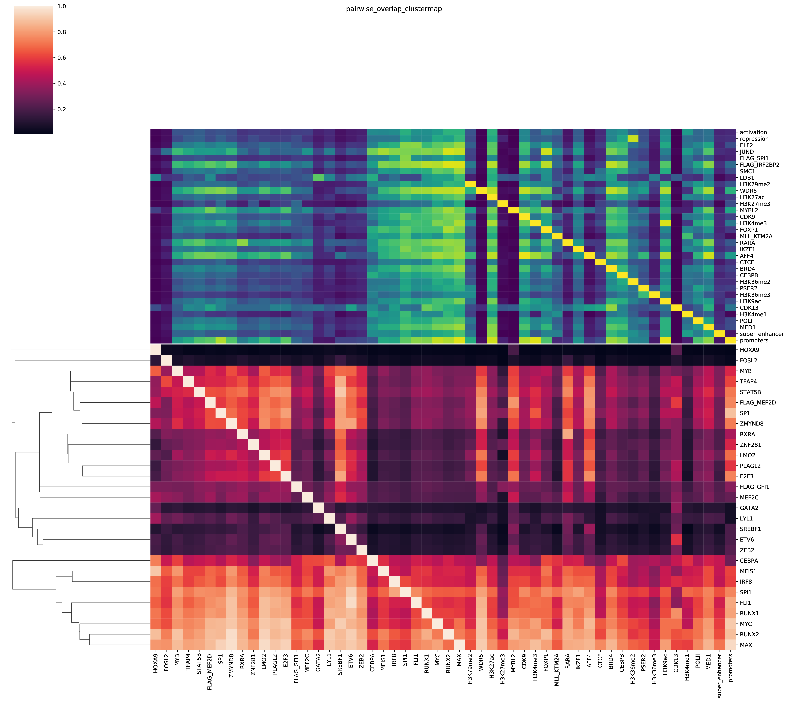
</script></section><section data-markdown><script type="text/template">2. Can these typical cobinding can be code of recruitment
</script></section><section data-markdown><script type="text/template">
<!--  -->
</script></section><section data-markdown><script type="text/template">3. What is the behavior now when we filter TF binding by motif only?

<!--  -->


</script></section><section data-markdown><script type="text/template">Can we see differences with unfiltered data?
</script></section><section data-markdown><script type="text/template">2. Can we find interesting relationship between motif regions and TF binding?


</script></section><section data-markdown><script type="text/template">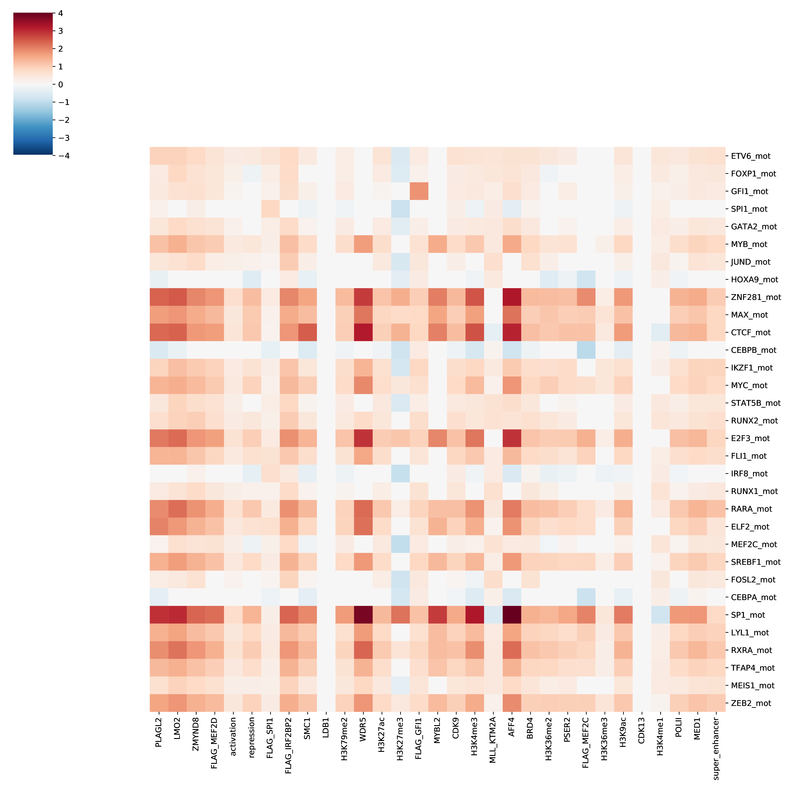
</script></section><section data-markdown><script type="text/template">3. Can we see cobinding typical of superenhancer?
</script></section><section data-markdown><script type="text/template">1. Comparing the dataset and looking for interesting relationship and changes when filtering for motif/ changing some parameters, etc..
</script></section><section data-markdown><script type="text/template">2. See if some set of TF can predict binding of some other TF.
</script></section><section data-markdown><script type="text/template">3. Finish adding the ABC model:

  - adding gene set analysis to see if a TF or a set of TF refers to some known gene set.
  - seeing if some TF or set of TF explains some known dependencies. By regulating some key genes in AML. 
  - seeing if we can predict gene expression from TF binding signal? (of CRC genes at least).
</script></section><section data-markdown><script type="text/template">4. Incorporating differential binding data. Differential binding is doing chipseq of some TF after having done fast knock out of some other TF and computing the differential peaks (binding in condition only / in both / in control only).

  - to know how some TF are changing cobinding from dropping other TF.
  - see if some set of TF can predict it.
</script></section><section data-markdown><script type="text/template">5. Adding RNP data: our RNP dataset is composed of expression profile of our cell line 24h after fast knock out of each CRC members:

  - can we predict the differential expression of some gene types from the binding code of their associated enhancer?
  - can we find a relationship between differential binding profile of some TF after knock out and differential expression after some knock out?

</script></section></section></div>
    </div>

    <script src="./dist/reveal.js"></script>

    <script src="./plugin/markdown/markdown.js"></script>
    <script src="./plugin/highlight/highlight.js"></script>
    <script src="./plugin/zoom/zoom.js"></script>
    <script src="./plugin/notes/notes.js"></script>
    <script src="./plugin/math/math.js"></script>
    <script>
      function extend() {
        var target = {};
        for (var i = 0; i < arguments.length; i++) {
          var source = arguments[i];
          for (var key in source) {
            if (source.hasOwnProperty(key)) {
              target[key] = source[key];
            }
          }
        }
        return target;
      }

      // default options to init reveal.js
      var defaultOptions = {
        controls: true,
        progress: true,
        history: true,
        center: true,
        transition: 'default', // none/fade/slide/convex/concave/zoom
        plugins: [
          RevealMarkdown,
          RevealHighlight,
          RevealZoom,
          RevealNotes,
          RevealMath
        ]
      };

      // options from URL query string
      var queryOptions = Reveal().getQueryHash() || {};

      var options = extend(defaultOptions, {"controls":false,"slideNumber":false,"transition":"slide","backgroundTransition":"fade"}, queryOptions);
    </script>


    <script>
      Reveal.initialize(options);
    </script>
  </body>
</html>
